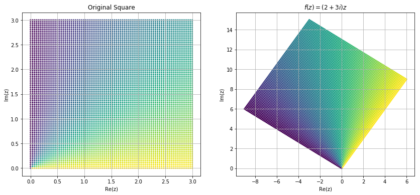
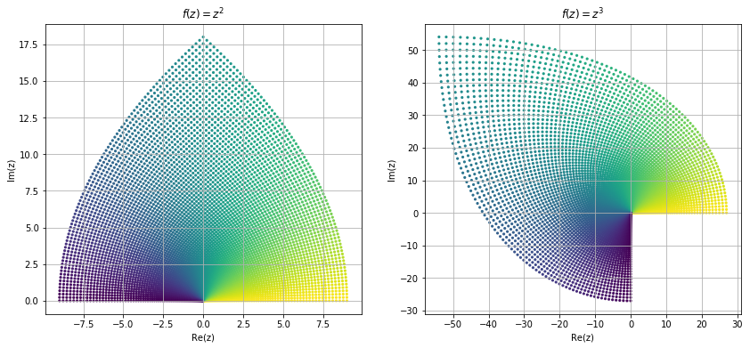
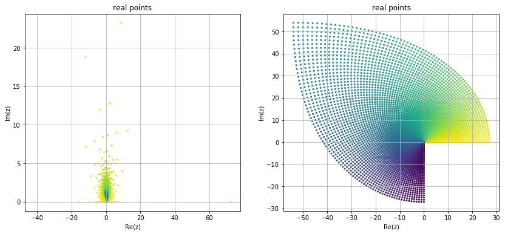
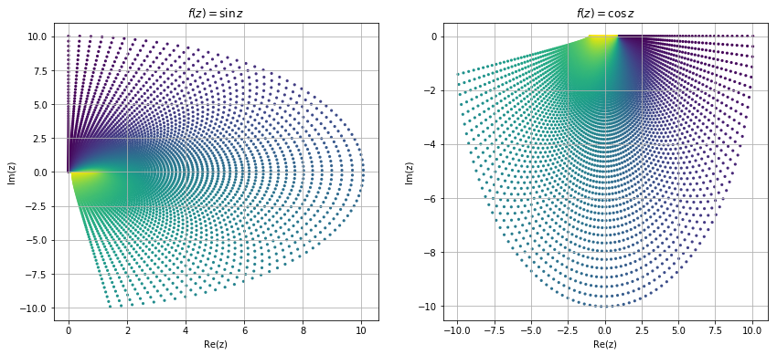
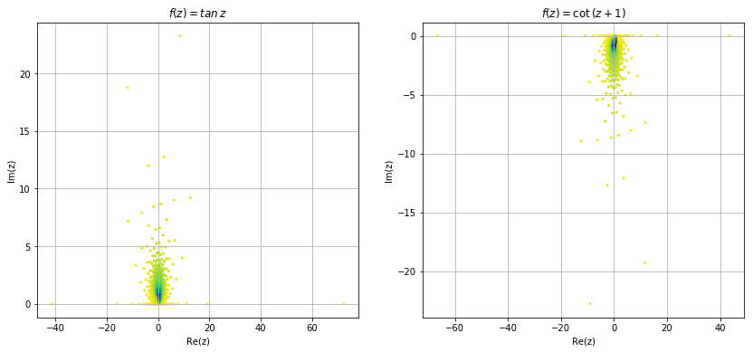
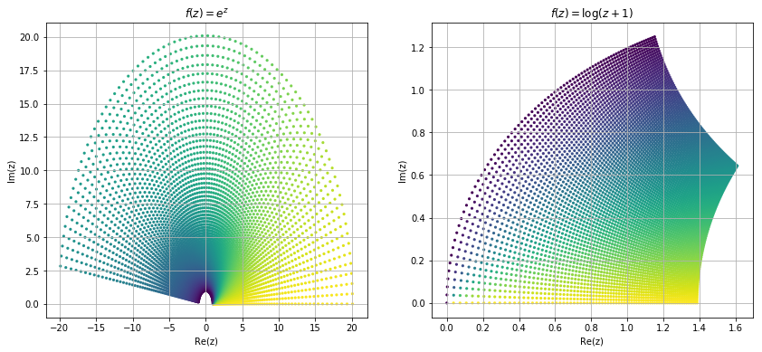

Function
After learning about complex numbers, now we are in position to learn about functions that map complex numbers to complex number, i.e., . If , then can be written as Where , is called the real part and is called the imaginary part of a complex valued funcion .
import sympy as sp sp.init_printing()
x, y, z = sp.symbols("x y z") z = x+1j*y f = sp.Function("f") f = z**2 # Lambda(z, z**2) sp.collect(f.expand(), 1j)
from plotly.offline import init_notebook_mode, iplot from IPython.display import display, HTML import numpy as np init_notebook_mode(connected=True) t=np.linspace(-1,1,100) x=t+t**2 y=t-t**2 xm=np.min(x)-1.5 xM=np.max(x)+1.5 ym=np.min(y)-1.5 yM=np.max(y)+1.5 N=50 s=np.linspace(-1,1,N) xx=s+s**2 yy=s-s**2 data=[dict(x=x, y=y, mode='lines', line=dict(width=2, color='blue') ), dict(x=x, y=y, mode='lines', line=dict(width=2, color='blue') ) ] layout=dict(xaxis=dict(range=[xm, xM], autorange=False, zeroline=False), yaxis=dict(range=[ym, yM], autorange=False, zeroline=False), title='Kinematic Generation of a Planar Curve', hovermode='closest', updatemenus= [{'type': 'buttons', 'buttons': [{'label': 'Play', 'method': 'animate', 'args': [None]}]}]) frames=[dict(data=[dict(x=[xx[k]], y=[yy[k]], mode='markers', marker=dict(color='red', size=10) ) ]) for k in range(N)] figure1=dict(data=data, layout=layout, frames=frames) iplot(figure1)
Now we try to visualize some of the functions in complex domain. Visualizing complex functions are not easy because it require dimensional space to plot a complex functions, and most of us can't visualize dimensional space. Other way is to look at the image different shapes of complex plane under these mappings. Here we look at the image of a square region under some common mapping.
%matplotlib inline import numpy as np import matplotlib.pyplot as plt def fun_plot(f): u = np.linspace(0, 3, 80) v = np.linspace(0, 3, 80) uu, vv = np.meshgrid(u, v) z0 = uu + 1j * vv z = f(z0) T = np.arctan2(uu,vv) plt.scatter(np.real(z), np.imag(z),c=T, s=10, lw = 0) plt.xlabel('Re(z)') plt.ylabel('Im(z)') plt.grid(True) plt.figure(figsize=(14,6)) plt.subplot(1,2,1) fun_plot(lambda z: z) plt.title('Original Square') plt.subplot(1,2,2) fun_plot(lambda z: z*(2+3*1j)) plt.title('$f(z)=(2+3i)z$') plt.gray plt.show()

plt.figure(figsize=(14,6)) plt.subplot(1,2,1) fun_plot(lambda z: z**2) plt.title('$f(z)=z^2$') plt.subplot(1,2,2) fun_plot(lambda z: z**3) plt.title('$f(z)=z^3$') plt.gray plt.show()

plt.figure(figsize=(14,6)) plt.subplot(1,2,1) fun_plot(lambda z: z**4) plt.title('$f(z)=z^4$') plt.subplot(1,2,2) fun_plot(lambda z: z**5) plt.title('$f(z)=z^5$') plt.gray plt.show()

from numpy import sin, cos, tan, exp, log plt.figure(figsize=(14,6)) plt.subplot(1,2,1) fun_plot(sin) plt.title('$f(z)=\sin \,z$') plt.subplot(1,2,2) fun_plot(cos) plt.title('$f(z)=\cos \,z$') plt.gray plt.show()

plt.figure(figsize=(14,6)) plt.subplot(1,2,1) fun_plot(tan) plt.title('$f(z)=tan \,z$') plt.subplot(1,2,2) fun_plot(lambda z: 1/tan(z+1)) plt.title('$f(z)=\cot \,(z+1)$') plt.gray plt.show()

plt.figure(figsize=(14,6)) plt.subplot(1,2,1) fun_plot(exp) plt.title('$f(z)=e^z$') plt.subplot(1,2,2) fun_plot(lambda z: log(z+1)) plt.title('$f(z)=\log(z+1)$') plt.gray plt.show()

from mpl_toolkits.mplot3d import Axes3D from matplotlib import cm from matplotlib.ticker import LinearLocator, FormatStrFormatter import matplotlib.pyplot as plt # the function that I'm going to plot def z_func(x,y): return (1-(x**2+y**3))*exp(-(x**2+y**2)/2) x = arange(-3.0,3.0,0.1) y = arange(-3.0,3.0,0.1) X,Y = meshgrid(x, y) # grid of point Z = z_func(X, Y) # evaluation of the function on the grid fig = plt.figure() ax = fig.gca(projection='3d') surf = ax.plot_surface(X, Y, Z, rstride=1, cstride=1, cmap=cm.RdBu,linewidth=0, antialiased=False) ax.zaxis.set_major_locator(LinearLocator(10)) ax.zaxis.set_major_formatter(FormatStrFormatter('%.02f')) fig.colorbar(surf, shrink=0.5, aspect=5) plt.show()
from numpy import exp,arange from pylab import meshgrid,cm,imshow,contour,clabel,colorbar,axis,title,show # the function that I'm going to plot def z_func(x,y): return (1-(x**2+y**3))*exp(-(x**2+y**2)/2) x = arange(-3.0,3.0,0.1) y = arange(-3.0,3.0,0.1) X,Y = meshgrid(x, y) # grid of point Z = z_func(X, Y) # evaluation of the function on the grid im = imshow(Z,cmap=cm.RdBu) # drawing the function # adding the Contour lines with labels cset = contour(Z,arange(-1,1.5,0.2),linewidths=2,cmap=cm.Set2) clabel(cset,inline=True,fmt='%1.1f',fontsize=10) colorbar(im) # adding the colobar on the right # latex fashion title title('$z=(1-x^2+y^3) e^{-(x^2+y^2)/2}$') show()
from mpmath import * cplot(lambda z: z, [-10, 10], [-10, 10]) cplot(lambda z: z**2, [-10, 10], [-10, 10]) cplot(exp, [-10, 10], [-10, 10]) cplot(zeta, [0, 50], [0, 50])